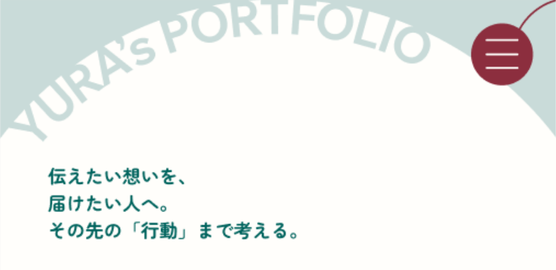

制作概要
- 担当内容
- 企画・構成・UI/UXデザイン
- 制作期間
- 2か月程度
- 使用ツール
- Figma・ChatGPT・Claude・HTML/CSS
目的
自身のポートフォリオサイトを制作しました。これまでに学んできたことや、できること、今後目指していることを一つのサイトにまとめ、自分自身のスキルや考え方、人柄まで知ってもらえるポートフォリオを目指しました。
ターゲット
- 採用担当の方
- 面接官の方
工夫した点
自分らしさが伝わるデザインと、情報の見やすさの両立を意識しました。
クリームソーダが好きという自分の好みをデザインにも取り入れ、全体のカラーリングや雰囲気をクリームソーダをモチーフにして制作しました。自分らしさを取り入れながらも、ポートフォリオとして見やすく、内容が伝わることを意識しています。
また、「どのような順番で見てもらえば、自分のことを理解してもらいやすいか」を考えながら構成を組みました。まず自分のスキルやできることを知ってもらい、その後に実際の制作物を見せ、最後に今後目指していることを伝えることで、内容に一貫性を持たせています。
制作する際には、さまざまなポートフォリオサイトやデザインを参考にし、情報の見せ方やレイアウトなどを比較しながら、自分のサイトに取り入れられる要素を考えました。
苦労した点
これまでのWebデザイン制作では、あらかじめ用意された内容をもとにデザインや構成を考えることが多く、掲載する内容そのものを一から考え、それをデザインとして形にしていくことが初めての経験でした。
そのため、何を掲載するのか、どの順番で見せるのか、どこまで詳しく伝えるのかなど、デザイン以外にも考えることが多く、思っていた以上に制作に時間がかかりました。
また、自分自身がクライアントでもあるため、完成したデザインに対して客観的な判断をすることも難しく、なかなか納得できる形にならず、何度も修正を重ねました。友人や身近な人にも実際に見てもらい、第三者からの意見を取り入れながら試行錯誤して完成させました。
課題・改善
今回の制作を通して、最初に全体像を整理してから制作を進めることの重要性を感じました。
自分で内容から考える場合、最初から細かい部分まで完成させようとすると、どこから手をつければよいのか分からなくなり、制作が進みにくくなることがありました。そのため今後は、あらかじめ制作時間や期限を決め、まずは全体の構成や大枠を完成させてから、後から細かなデザインや文章を調整する進め方を意識したいと考えています。
また、制作の際には参考となるサイトやデザインを用意し、さまざまな表現を見ることで、自分のデザインの引き出しを増やしていくことも重要だと感じました。
一方で、ポートフォリオ制作はこれまでの制作物を改めて振り返る機会にもなりました。過去の制作物を見返す中で、「このときはこういうことを意識していた」と気づいたり、以前身につけた考え方を改めて思い出したりすることができました。
制作物をまとめるだけではなく、これまでの学びや自分自身の成長を振り返る機会になったことで、今後の制作にも活かせる発見があったと感じています。